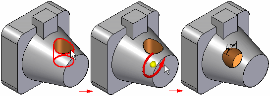
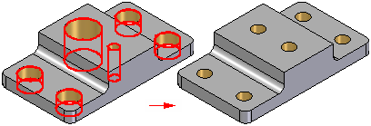

Direct Editing in Solid Edge
The direct editing commands in Solid Edge allow you to modify models imported from other applications that do not have a feature tree, or to modify native Solid Edge design models without accessing the current feature tree.
The direct editing capability allows you to make design changes to a model by accessing the existing surface and solid geometry rather than the feature intelligence that drives the geometry.
You cannot create new surface topology with the direct editing commands. You can only manipulate existing faces, features, and bodies.
Though there are many direct editing commands, their functions typically fall within the following categories: moving, rotating, resizing, or deleting sets of faces on a model. For example, you can rotate a set of faces by selecting the faces you want to rotate and defining a rotation axis. A rotate face feature and a driving dimension are added to the document to make future edits easier.

The direct editing capability is especially useful when working with models imported from other applications that do not have an existing feature tree. Without this capability, you are limited in the design modifications you can make. For more information on importing models created in other applications, see the Working with Foreign Data Overview and Opening Foreign Files in Solid Edge Help topics.
Getting started
Direct editing commands are available in both the Part and Sheet Metal environments, with the available commands tailored for the specific requirements for each model type. The direct editing commands are available on the Home tab in the Modify group.
When working with a sheet metal model imported from another application, you should first use the Convert to Sheet Metal command in the Sheet Metal environment to convert the model to a sheet metal part.
The conversion process adds Solid Edge sheet metal attributes to the model so it behaves as though it was created using sheet metal features. This ensures that sheet metal attributes such as material thickness and bend radius are honored during direct editing operations.
Direct editing best practices
Because imported models have a limited amount of built-in intelligence, they can be sensitive to certain types of topological changes. For example, when moving a set of faces, you will usually get better results if the faces you are moving stay within the boundaries defined by the original set of adjacent faces.

Editing native Solid Edge models
When you use the direct editing commands to modify native Solid Edge models, the direct editing operations only change the surface topology of the model. The profiles and sketches for existing profile-based features, and the dimensional values for treatment features are not modified.
When you use a direct editing command to modify a Solid Edge model, a new feature is added to the feature tree. The new direct editing feature overrides other features that occurred before it. For example, if you use the direct editing command Resize Holes to change the size of an existing hole feature, the resize holes feature then takes precedence over the size of the hole because it occurs later in the feature tree. To modify the size of the hole again later, you should edit the resize holes feature, not the original profile-based hole feature.
Although the direct editing commands are powerful tools, in many cases taking advantage of the editing capability of an existing profile-based feature or treatment feature can be the more logical choice when making a design change to a native Solid Edge model.
In other cases, using a direct editing command to edit the model can be the best choice. For example, the Resize Holes command allows you to modify multiple hole features and/or circular cutouts of different sizes to one common size in one operation.

Also, when working with a complex part with hundreds of features, it often can be quicker to use a direct editing feature to make a design change because the feature tree does not need to recompute.
Direct editing and simplifying compared
Many of the commands available for directly editing a part are also available when simplifying a part in the Simplify Model environment. Deciding whether to directly edit the model or simplify the model is determined by whether you want to have access to a simplified version of the part in an assembly or when creating a drawing.
If you want to use a simplified version of the part in an assembly or a drawing, you must use the commands in the Simplify Model environment. No simplified version of the model is created when you directly edit a model.